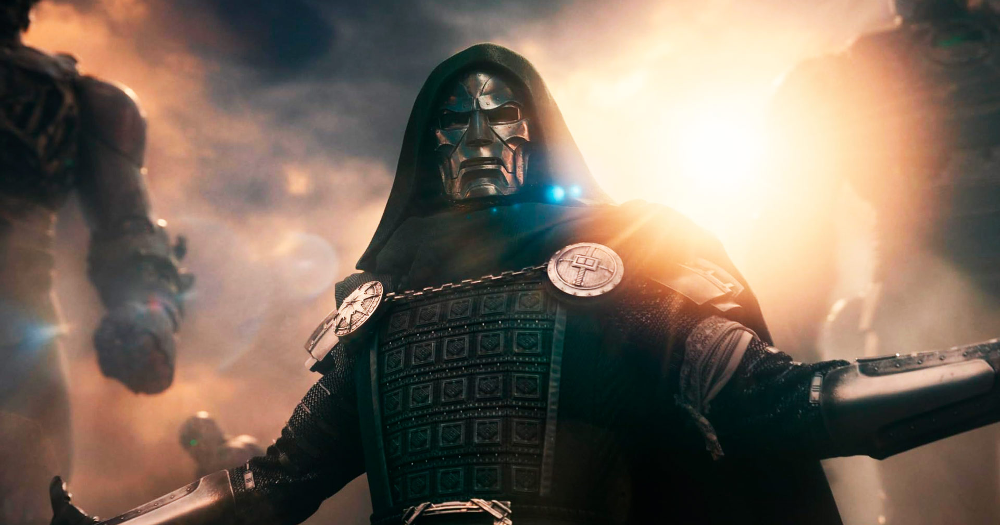
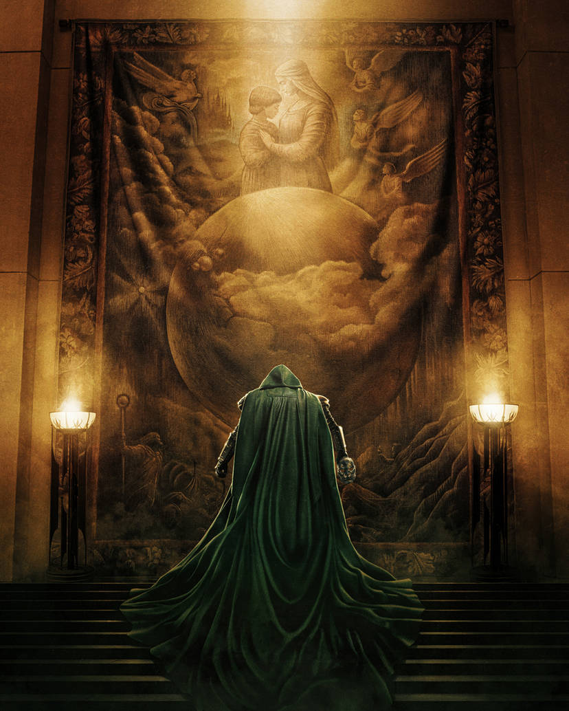
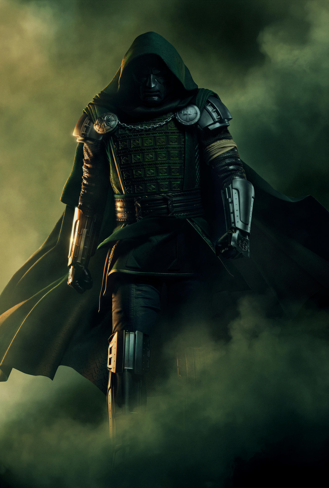
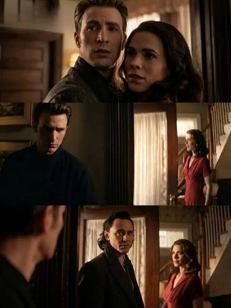
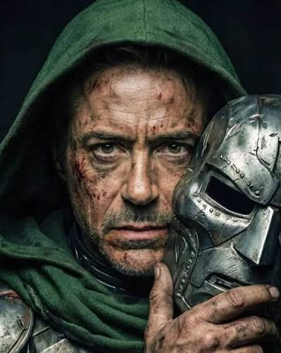

As Motivações do Destino
“O inferno respondir a mim, pois eu sou o Destino.”
Uma frase arrepiante, carregada de mistério e poder. Nesta página, vamos explorar o verdadeiro motivo por trás do plano do Destino de fazer as Terras colidirem, levando à destruição de universos inteiros e à morte de incontáveis vidas no multiverso.
Mas e se houver uma explicação por trás de tudo isso? E se a culpa não for apenas do Destino, mas também de um herói extremamente conhecido, cujas escolhas podem ter desencadeado uma catástrofe muito maior do que imaginamos?
Prepare-se, pois talvez a verdade seja muito mais sombria do que parece.
Veja o conteudo

Tragedia da vida do Destino
Susan “Sue” Storm, integrante do Quarteto Fantástico, explica a Victor que o Doutor Destino
nem sempre foi assim. Ele era gentil, carinhoso e inteligente, mas tudo mudou após a morte
de sua família, que o transformou completamente.
Existem rumores de que a tragédia foi
causada por uma incursão entre Terras. Outra teoria aponta que Steve Rogers,
o Capitão América, pode ter contribuído para o início das incursões ao voltar no tempo
e permanecer no passado com Peggy Carter, provocando consequências
que afetaram todo o multiverso.

Vidas Roubadas
Doutor Destino afirma, no primeiro trailer, que os heróis estão vivendo vidas roubadas e que
agora precisam devolvê-las. Mas e se isso estiver relacionado às alterações na linha do tempo
e no multiverso?
O trailer mostra heróis vivendo momentos felizes com suas famílias,
como Scott Lang com Cassie, Johnny Storm com Franklin Richards, Steve Rogers com uma
criança e Thor com Love.
Será que esses finais felizes foram conquistados ao custo de mudanças
na realidade? Para Destino, os heróis podem ter roubado essas vidas ao interferir no destino.
Agora, ele quer cobrar essa dívida e reconfigurar o multiverso à sua maneira, mesmo que isso
signifique tirar dos heróis tudo o que eles mais amam.

Steve Rogers causou as incursões ?
Steve Rogers, o antigo Capitão América, pode ter sido o responsável por desencadear as incursões
no multiverso. Ao devolver as Joias do Infinito, ele deveria ter retornado ao presente, mas decidiu ficar
no passado para viver ao lado de Peggy Carter. Essa escolha pode ter alterado a linha do tempo e
desencadeado consequências que ele não imaginava.
E se essa decisão tiver sido um dos fatores que
deram início às incursões? Talvez não seja por acaso que Loki tenha ido ao encontro de Steve para alertá-lo
sobre algo. Será que ele sabe que a escolha do antigo Capitão América pode ter colocado
todo o multiverso em risco?

Destino é variante de Tony Stark ?
Desde que Vingadores: Doomsday foi anunciado, uma grande dúvida surgiu entre os fãs: por que Doutor
Destino tem o mesmo rosto de Tony Stark?
Os irmãos Russo, diretores do filme, já afirmaram que Victor
Von Doom não é uma variante maligna de Tony Stark. Mas será que os dois podem compartilhar
os mesmos genes no multiverso?
No MCU, variantes não precisam necessariamente ser a mesma pessoa
seguindo caminhos diferentes. Isso abre a possibilidade de Tony Stark e Victor Von Doom terem a mesma
aparência, mas serem indivíduos completamente distintos, com origens, histórias e destinos diferentes.
Mas, se não são a mesma pessoa, por que o multiverso deu a Destino justamente o rosto de um dos
maiores heróis dos Vingadores? Será que essa semelhança terá um papel fundamental na trama?